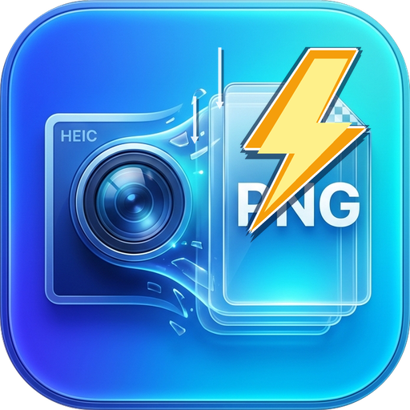

專為 Windows 打造的 HEIC / HEIF 圖片批次轉換工具。支援拖放秒轉、自動方向校正、EXIF 拍攝資訊完整保留與多核心極速處理。
解決線上工具與付費軟體的所有痛點，專注極致體驗
照片完全不需上傳雲端伺服器，無張數與檔案大小限制，個人家庭照、重要證件與隱私照片絕不外洩。
提供專屬的「拖放轉換」捷徑，只要選取照片往桌面圖示一丟，不用開軟體視窗即可在原地秒轉成 PNG！
自動辨識手機拍攝方向（Orientation），徹底解決照片橫躺、上下顛倒問題，同時完整保留拍攝時間與相機參數。
簡單三步驟，輕鬆搞定大量圖片格式轉換

A: 轉換為 PNG 採用的是無損壓縮編碼（Lossless），完全保留原始色彩與清晰度，絕不犧牲任何畫質細節。
A: 可以！在視窗版「轉換設定」中，您可以自由在 PNG、JPG 與 WebP 之間切換。
A: 不需要！直接下載發行版的獨立 .exe 檔案，雙擊即可直接在任何 64 位元 Windows 電腦上運行。